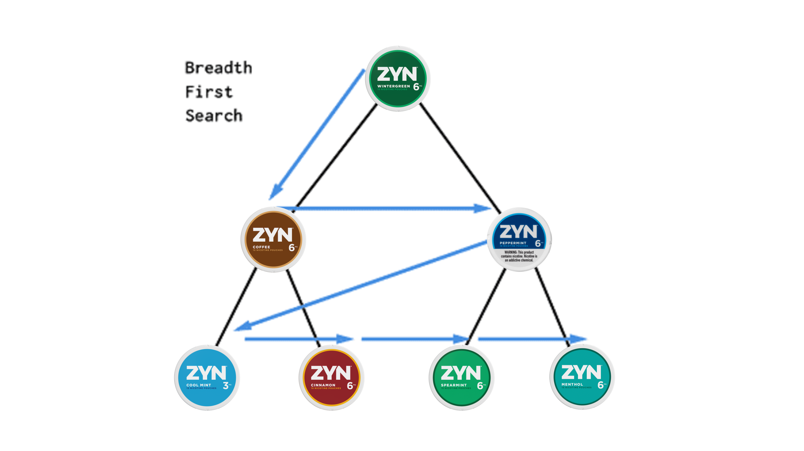
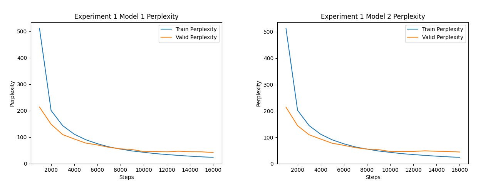

Hi, I'm Ryan.
I currently split my time between healthcare AI and ML for drug discovery.
At Claire, I work on an AI-powered platform for healthcare providers, building backend systems, cloud infrastructure, deployment workflows, and AI-powered product features.
At Ommio Health, I'm building machine learning systems for computational drug discovery, combining molecular property prediction, generative design, and simulation to identify and prioritize novel compounds for experimental validation.
Previously, I was a research assistant at Dr. Lee Cooper's Computational and Integrative Pathology Group at the Northwestern Feinberg School of Medicine, where I finetuned foundation models (SAM) for segmentation tasks on pathology images.
Current things I'm exploring: "online"/"goal-oriented"-RL (like AlphaFold for protein generation, or LinkInvent for linkers), causal inference approaches in deep learning, and kernel optimization.
Other interests: bioenergetic dieting, biohacking, alpine skiing, squash, philosophy of empiricism, ricing my Linux server.
Blog Posts
Profiting Off Zyn with BFS Webscrape
I developed a BFS algorithm to track the rapid growth of Zyn in the U.S., leading to a highly profitable investment in parent company Swedish Match.

The Butterfly Effect: How Random Initialization Shapes WTE Semantic Similarity
An experiment exploring how random weight initialization leads identical language models to develop divergent word token embeddings under identical training conditions.
